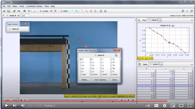

The Getting Started with Tracker tutorial was recorded by Doug Brown, the creator Tracker, to lead users through the process of analyze the motion of a simple video clip. This video will get you up and running doing Tracker video analysis and modeling in 15 minutes.